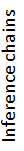

Text

Hypothesis
English
Spanish
Choose resources:
Edit resources
Set transitivity limit:
1
2
3
Choose inference model:
HN-PLM
M-PLM
inference probability:
%
Example A
Example B
Example C
Example D
Example E-cross-lingual
Relevant papers:
Eyal Shnarch
,
Erel Segal-haLevi
,
Jacob Goldberger
,
Ido Dagan
.
PLIS: a Probabilistic Lexical Inference System
. ACL (Demonstration), 2013.
Eyal Shnarch
,
Ido Dagan
,
Jacob Goldberger
.
A Probabilistic Lexical Model for Ranking Textual Inferences
. *SEM, 2012.
Eyal Shnarch
,
Jacob Goldberger
,
Ido Dagan
.
Towards a Probabilistic Model for Lexical Entailment
. TextInfer, 2011.
Eyal Shnarch
,
Jacob Goldberger
,
Ido Dagan
.
A Probabilistic Modeling Framework for Lexical Entailment
. ACL, 2011.